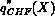
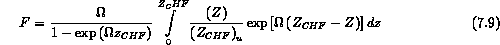
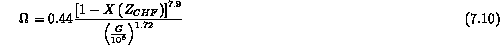
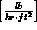
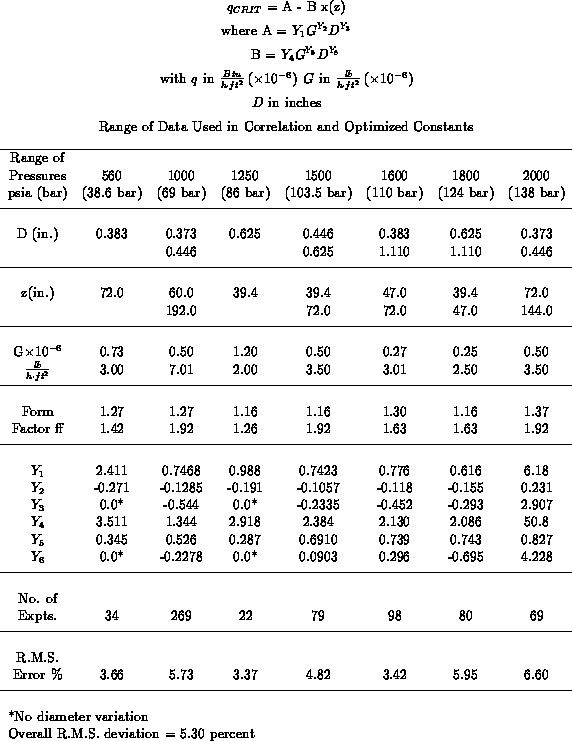

In the introduction to the CHF concept correlation we illustrated the effect of uniform heating of a channel versus nonuniform heating. In general there are two ways to handle nonuniform heating:
Let us consider each approach below.
The differences in  for nonuniform heating led Tong, et al., (1966) to propose the so-called "F-factor" method for the prediction of critical heat flux in nonuniform axially heated channels. Their method is illustrated schematically in Figure 7.10, the three curves shown in this figure are respectively:

where  is the distance from the channel inlet to the point at which the burnout flux is being predicted and is given by the empirical expression:
is the distance from the channel inlet to the point at which the burnout flux is being predicted and is given by the empirical expression:

where G is in  .
Nonuniform heating experiments have been investigated in the past, primarily for axial variation of the heat flux. Each of these studies have resulted in an empirical correlation for CHF with nonuniform heating. The basic assumption in directly correlating the CHF data from such tests is that one correlates the CHF values for the actual local conditions (e.g., G,  , P). Kirby (1966) used some of the past data and more recent data from Harwell to develop such a correlation (Table 7.2). This is suggested for the conditions listed for nonuniform axial heating situations as an alternative for the F-factor.
, P). Kirby (1966) used some of the past data and more recent data from Harwell to develop such a correlation (Table 7.2). This is suggested for the conditions listed for nonuniform axial heating situations as an alternative for the F-factor.
CorrelationEquation
